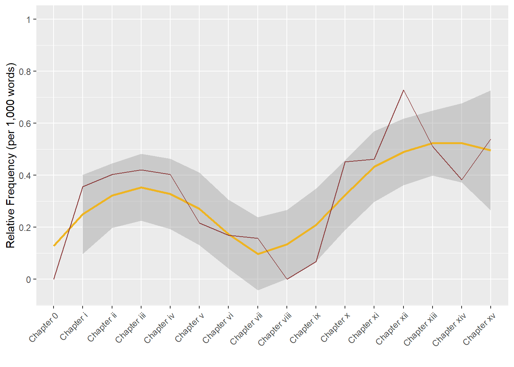
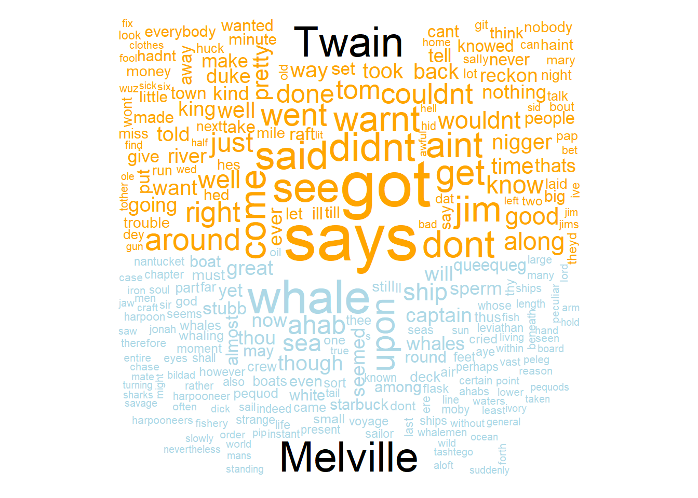
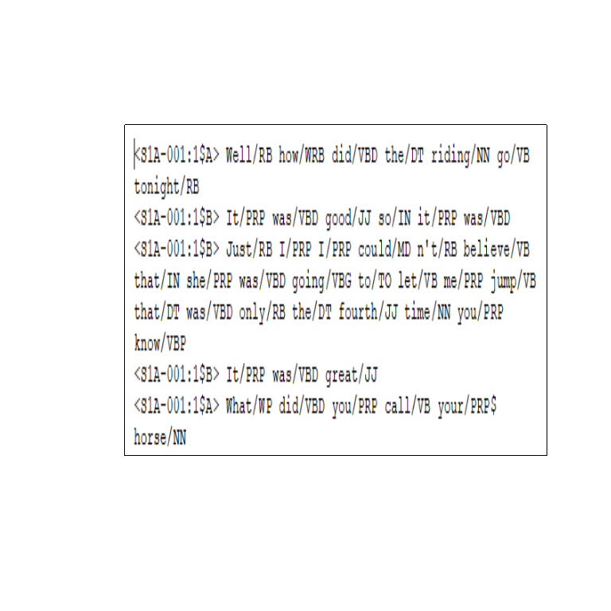
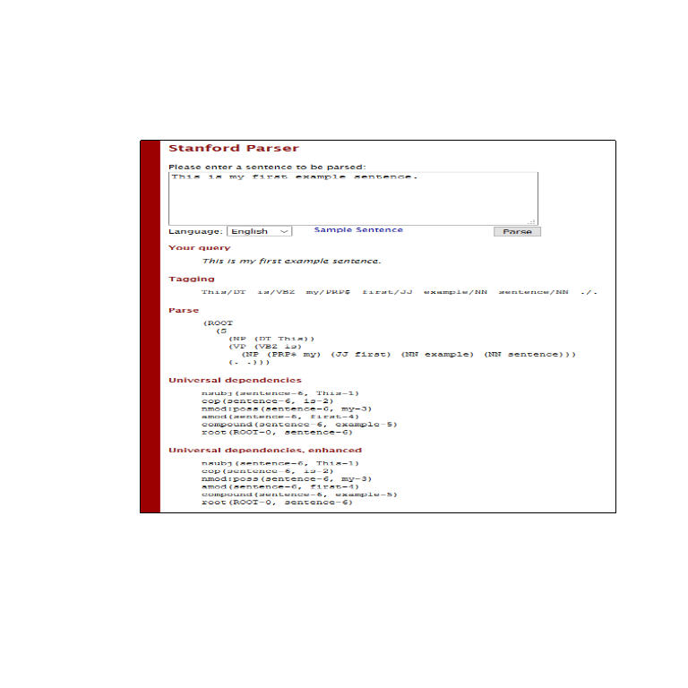
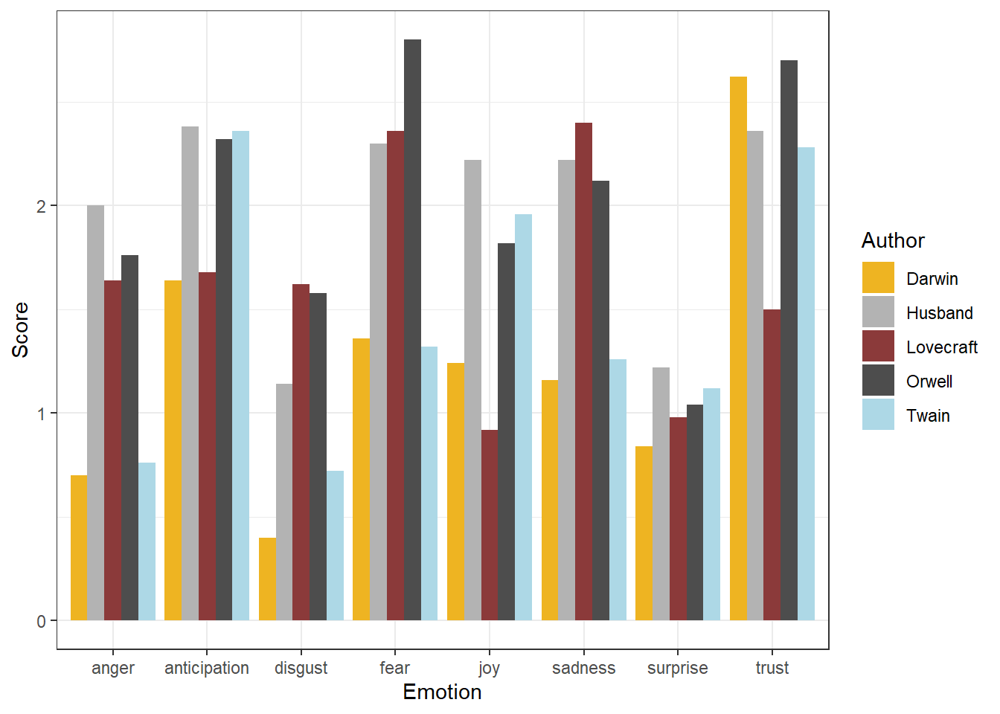

Text Analysis
UQ SLC Digital Team
2019-07-10

1 Introduction
This section introduces Text Analysis, i.e. computer-based analysis of language data or the (semi-)automated extraction of information from text. The advantage of Text Analysis over manual techniques lies in the fact that Text Analysis allows to extract information from large sets of textual data and in a replicable manner. Other terms that are more or less synonymous with Text Analysis are Text Mining or Text Analytics (sometimes, Text Analysis is considered more qualitative while Text Analytics is considered to be quantitative). This distinction is not taken up here as Text Analysis, while allowing for qualitative analysis, builds upon quantitative information, i.e. information about frequencies or conditional probabilities.
Most of the applications of Text Analysis are based upon a relatively limited number of key procedures or concepts (e.g. concordancing, word frequencies, annotation or tagging, parsing, collocation, text classification, Sentiment Analysis, Entity Extraction, Topic Modelling, etc.). In the following, we will explore these procedures and introduce some basic tools that help you perform the introduced tasks.
2 Distant Reading
Distant Reading is a cover term for applications of Text Analysis that allow to investigate literary and cultural trends using text data. Distant Reading contrasts with close reading, i.e. reading texts in the traditional sense whereas Distant Reading refers to the analysis of large amounts of text. Text Analysis and distant reading are similar with respect to the methods that are used but different with respect to their outlook. The outlook of distant reading is to extract information from text without close reading, i.e. reading the document(s) itself but rather focusing on emerging patterns in the language that is used.

Google N-Gram Viewer results for “ communist “,” terror “,” democratic “,” liberal “, and “ terror “ from 1820 to 2008.
Distant Reading is very attractive because it can be applied to so many different research questions as the only requirements are that the data is present in text format and is sufficiently large. If these conditions are met, then Distant Reading or Text Analysis methods can offer a myriad of insights that would not be derivable from close reading techniques.
3 Concordancing
In Text Analysis, concordancing refers to the extraction of words from a given text or texts. Commonly, concordances are displayed in the form of KWIC displays (Key Word in Context) where the search term is shown with some preceding and following context.

KWIC display of the search term language extracted from the BROWN corpus in the program AntConc.
Concordancing is helpful for inspecting how often a given word occurs in a text or a collection of texts, for seeing how the term is used in the data, for extracting examples, and it also represents a basic procedure and often the first step in more sophisticated analyses of language data.
3.1 Practical example
In this example, we will use “R” to create a KWIC display. More precisely, we will load Charles Darwin’s “On the origin of species” and investigate his use of the term “natural selection” in across chapters.
# read in text
darwin <- readLines("D:\\Uni\\UQ\\LADAL\\SLCLADAL.github.io\\data/origindarwin.txt")
# inspect data
str(darwin)## chr [1:20001] "THE ORIGIN OF SPECIES " "BY " "CHARLES DARWIN " ...The output shows that we are dealing with 20001 individual elements. Therefore, we combine these elements into one element and remove everything element that occurs after the header “CHAPTER II”.
# create a single element
darwin1 <- paste(darwin, sep = " ", collapse = " ")
# split monograph into chapters
darwin2 <- as.vector(unlist(sapply(darwin1, function(x) {
x <- strsplit(gsub("(CHAPTER [xviXVI]{1,7})", "qwertz\\1", x), "qwertz" )
})))
# convert everything into lower case
darwin3 <- tolower(darwin2)
# inspect data
nchar(darwin1); nchar(darwin2)## [1] 1181142## [1] 10133 76156 40736 37419 121498 75188 95602 102880 83598 81775
## [11] 72428 70939 74511 53293 114322 70664We now have the subsection of the data that we aim to investigate and can now perform the concordaning.
# load function for concordancing
source("D:\\R/ConcR_2.3_loadedfiles.R")
# set parameters for concordancing
pattern <- "organism[s]{0,1}"
context <- 50
# extract all adjectives (concordance)
darwinnatsel <- ConcR(darwin3, pattern, context)
# inspect data
darwinnatsel[1:5, 2:ncol(darwinnatsel)]## PreContext Token
## 1 <NA> <NA>
## 2 y generations. no case is on record of a variable organism
## 3 there are two factors; namely, the nature of the organism
## 4 ects of the conditions of life on each individual organism
## 5 hat unlike their parents. i may add, that as some organisms
## PostContext
## 1 <NA>
## 2 ceasing to vary wnder cultivation. our oldest cul
## 3 , and the nature of the conditions. the former see
## 4 , in nearly the same manner as the chill affects d
## 5 breed freely under the most unnat- ural condition# clean data
darwinnatsel1 <- darwinnatsel[complete.cases(darwinnatsel),]
# determine chapter
darwinnatsel1$Chapter <- ifelse(grepl("chapter [xvi]{1,7}\\.{0,1} .*", darwinnatsel1$OriginalString) == T, gsub("(chapter [xvi]{1,7})\\.{0,1} .*", "\\1", darwinnatsel1$OriginalString), darwinnatsel1$OriginalString)
# remove OriginalString column
darwinnatsel1$OriginalString <- NULL
# inspect data
head(darwinnatsel1)## PreContext Token
## 2 y generations. no case is on record of a variable organism
## 3 there are two factors; namely, the nature of the organism
## 4 ects of the conditions of life on each individual organism
## 5 hat unlike their parents. i may add, that as some organisms
## 6 e importance in comparison with the nature of the organism
## 7 likewise neces- sarily occurs with closely allied organisms
## PostContext Chapter
## 2 ceasing to vary wnder cultivation. our oldest cul chapter i
## 3 , and the nature of the conditions. the former see chapter i
## 4 , in nearly the same manner as the chill affects d chapter i
## 5 breed freely under the most unnat- ural condition chapter i
## 6 in determining each particular form of variation chapter i
## 7 , which inhabit distinct continents or islands. wh chapter ii# extract number of words per chapter
wordfreq <- as.vector(sapply(darwin3, function(x){
x <- as.vector(unlist(strsplit(x, " ")))
x <- length(x)
}))
# extract number of search terms per chapter
termfreq <- as.vector(unlist(sapply(darwin3, function(x){
x <- str_extract_all(x, pattern)
x <- length(as.vector(unlist(x)))
})))
# extract chapters
chapters <- as.vector(unlist(sapply(darwin3, function(x){
x <- gsub("(chapter [xvi]{1,7})\\.{0,1} .*", "\\1", x)
x <- ifelse(nchar(x) >50, "chapter 0", x)
})))
# calculate rel. freq of serach term per chapter
relfreq <- termfreq/wordfreq*1000
# create table of results
tb <- data.frame(chapters, relfreq)
tb$chapters <- factor(tb$chapters,
levels = c("chapter 0", "chapter i", "chapter ii",
"chapter iii", "chapter iv", "chapter v",
"chapter vi", "chapter vii", "chapter viii",
"chapter ix", "chapter x", "chapter xi",
"chapter xii", "chapter xiii", "chapter xiv",
"chapter xv"))
# inspect results
tb## chapters relfreq
## 1 chapter 0 0.0000000
## 2 chapter i 0.3554924
## 3 chapter ii 0.4023605
## 4 chapter iii 0.4204036
## 5 chapter iv 0.4032800
## 6 chapter v 0.2155792
## 7 chapter vi 0.1687194
## 8 chapter vii 0.1574390
## 9 chapter viii 0.0000000
## 10 chapter ix 0.0678380
## 11 chapter x 0.4506873
## 12 chapter xi 0.4616805
## 13 chapter xii 0.7271141
## 14 chapter xiii 0.5093206
## 15 chapter xiv 0.3815520
## 16 chapter xv 0.5390005We can now vizualize the relative frequencies of our search word per chapter.
library(ggplot2)
ggplot(tb, aes(x=chapters, y=relfreq, group =1)) +
geom_smooth(aes(y = relfreq, x = chapters), color = "goldenrod2")+
geom_line(aes(y = relfreq, x = chapters), color = "indianred4") +
guides(color=guide_legend(override.aes=list(fill=NA))) +
theme(axis.text.x = element_text(angle = 45, hjust = 1))+
scale_x_discrete(name ="",
breaks=c("chapter 0", "chapter i", "chapter ii",
"chapter iii", "chapter iv", "chapter v",
"chapter vi", "chapter vii", "chapter viii",
"chapter ix", "chapter x", "chapter xi",
"chapter xii", "chapter xiii", "chapter xiv",
"chapter xv"),
labels=c("Chapter 0", "Chapter i", "Chapter ii",
"Chapter iii", "Chapter iv", "Chapter v",
"Chapter vi", "Chapter vii", "Chapter viii",
"Chapter ix", "Chapter x", "Chapter xi",
"Chapter xii", "Chapter xiii", "Chapter xiv",
"Chapter xv")) +
scale_y_continuous(name ="Relative Frequency (per 1,000 words)",
breaks=seq(0, 1, 0.2),
labels=seq(0, 1, 0.2),
limits=c(-0.05, 1))
4 Word Frequency
One basic aspect of Text Analysis consists in extracting word frequency lists, i.e. determining how often word forms occur in a given text or collection of texts.
## Word Frequency
## 1 of 54
## 2 the 50
## 3 and 46
## 4 language 29
## 5 in 19
## 6 a 16Such word frequency lists can be visualized as word clouds.

Such word lists can be used to determine differences between texts. For instance, we can load two different texts and check whether they differ with respect to word frequencies.

Also, private dialogue data will contain second person pronouns substantially more frequently than, for instance, scripted monologues such as speeches. Thus, word lists can be used in text classification and to determine the formality of texts.
As an example, below you find the number of the second person pronouns you and your and the number of all words except for these second person pronouns in private dialogues compared with scripted monologues in the Irish component of the International corpus of English (ICE).
Private dialogues Scripted monologuesSecond person pronouns (you, your) 6761 659 Other words 259625 105295 Total 266386 105954
If we calculate the percentage of second person pronouns in both text types and see whether private dialogues contain more of these second person pronouns than scripted monologues (i.e. speeches).
Private dialogues Scripted monologuesSecond person pronouns (you, your) 6761 659 Other words 259625 105295 Percent 2.60 0.63
This simple example shows that second person pronouns make up 2.6 percent of all words that are used in private dialogues while they only amount to 0.63 percent in scripted speeches.
5 Term-Document Matrices
Term-Document Matrices are an extension of word frequencies.
6 Collocation
Collocation refers to the co-occurrence of words. A typical example of a collocation is “Merry Christmas” because the words merry and Christmas occur together more frequently together than would be expected by chance, if words were just randomly stringed together. Collocations are not only an important concept in language teaching but they are also fundamental in Text Analysis and many other research areas working with language data. In addition, words that collocate do not have to be immediately adjacent but can also encompass several slots. For instance,
7 Tagging and Annotation
Tagging or annotation refers to a process in which information is added to existing text. The annotation can be very different depending on the task at hand. The most common type of annotation when it comes to language data is part-of-speech tagging where the word class is determined for each word in a text and the word class is then added to the word as a tag. However, there are many different ways to tag or annotate texts. Sentiment Analysis, for instance, also annotates texts or words with respect to its or their emotional value or polarity. In fact, annotation is required in many machine-learning contexts because annotated texts represent a training set on which an algorithm is trained that then predicts for unknown items what values they would most likely be assigned if the annotation were done manually.
7.1 Part-of-speech tagging (pos tagging)
For many analyses that use language data it is useful or even important to differentiate between different parts of speech. In order to determine the word class of a certain word, we use a procedure which is called part-of-speech tagging or pos-tagging for short.
 Figure 3: Example of the first lines of the pos-tagged ICE Ireland.
7.2 Syntactic Parsing
Parsing refers to another type of annotation in which typically syntactic relations or functions are added to text. Parsing builds on PoS-tagging and allows drawing syntactic trees or dependencies.

The parsed information can then be used to create e.g. syntax trees.
8 Text Classification
Text classification refers to methods that allow to classify a given text to a predefined set of languages, genres, authors, or the like. Such classifications are typically based on the relative frequency of word classes, key words, phonemes, or other linguistic features such as average sentence length, words per line, etc.
As with most other methods that are used in text analysis, text classification typically builds upon a training set that is already annotated with the required tags. Training sets and the features that are derived from these training sets can be created by oneself or one can use build in training sets that are provided in the respective software packages or tools.
8.1 Practical example
In the following, we will use the frequency of phonemes to classify a text. In a first step, we read in a German text, and split it into phonemes.
# read in German text
German <- readLines("D:\\Uni\\UQ\\LADAL\\SLCLADAL.github.io\\data/phonemictext1.txt")
# clean text
German <- gsub(" ", "", German)
# split text into phonemes
German <- strsplit(German, "")
# unlist and convert into vector
German <- as.vector(unlist(German))
# inspect data
head(German)## [1] "?" "a" "l" "s" "h" "E"We now do the same for three other texts - an English and a Spanish text as well as one text in a language that we will determine using classification.
# read in texts
English <- readLines("D:\\Uni\\UQ\\LADAL\\SLCLADAL.github.io\\data/phonemictext2.txt")
Spanish <- readLines("D:\\Uni\\UQ\\LADAL\\SLCLADAL.github.io\\data/phonemictext3.txt")
Unknown <- readLines("D:\\Uni\\UQ\\LADAL\\SLCLADAL.github.io\\data/phonemictext4.txt")
# clean, split texts into phonemes, unlist and convert them into vectors
English <- as.vector(unlist(strsplit(gsub(" ", "", English), "")))
Spanish <- as.vector(unlist(strsplit(gsub(" ", "", Spanish), "")))
Unknown <- as.vector(unlist(strsplit(gsub(" ", "", Unknown), "")))
# inspect data
head(English)## [1] "D" "@" "b" "U" "k" "I"We will now create a table that represents the phonemes and their frequencies in each of the 4 texts. In addition, we will add the language and simpily the column names.
# create data tables
German <- data.frame(names(table(German)), as.vector(table(German)))
English <- data.frame(names(table(English)), as.vector(table(English)))
Spanish <- data.frame(names(table(Spanish)), as.vector(table(Spanish)))
Unknown <- data.frame(names(table(Unknown)), as.vector(table(Unknown)))
# add column with language
German$Language <- "German"
English$Language <- "English"
Spanish$Language <- "Spanish"
Unknown$Language <- "Unknown"
# simlify column names
colnames(German)[1:2] <- c("Phoneme", "Frequency")
colnames(English)[1:2] <- c("Phoneme", "Frequency")
colnames(Spanish)[1:2] <- c("Phoneme", "Frequency")
colnames(Unknown)[1:2] <- c("Phoneme", "Frequency")
# comine all tables into a single table
classdata <- rbind(German, English, Spanish, Unknown)
# inspect table for English
head(classdata)## Phoneme Frequency Language
## 1 - 6 German
## 2 : 569 German
## 3 ? 556 German
## 4 @ 565 German
## 5 ¼ 6 German
## 6 2 6 GermanNow, we group the data so that we see, how often each phoneme is used in each language.
# set options
options(stringsAsFactors = F)
# create wide format
classdatanew <- reshape(classdata, idvar = "Language", timevar = "Phoneme",direction = "wide")
classdw <- t(apply(classdatanew, 1, function(x){
x <- ifelse(is.na(x) == T, 0, x)}))
# simplify column names
colnames(classdw) <- gsub("Frequency.", "", colnames(classdw))
# convert into data frame
classdw <- as.data.frame(classdw)
# inspect data
classdw[, 1:6]## Language - : ? @ ¼
## 1 German 6 569 556 565 6
## 63 English 8 176 0 309 0
## 118 Spanish 5 0 0 0 0
## 168 Unknown 12 286 0 468 0Now, we need to transform the data again, so that we have the frequency of each phoneme by language as the classifier will use “Language” as the dependent varianble and the phoneme frequencies as predictors.
numvar <- colnames(classdw)[2:length(colnames(classdw))]
classdw[numvar] <- lapply(classdw[numvar], as.numeric)
# function for normalizing numeric variables
normalize <- function(x) { (x -min(x))/(max(x)-min(x)) }
# apply normalization
classdw[numvar] <- as.data.frame(lapply(classdw[numvar], normalize))
# inspect data
classdw[, 1:5]## Language - : ? @
## 1 German 0.1428571 1.0000000 1 1.0000000
## 63 English 0.4285714 0.3093146 0 0.5469027
## 118 Spanish 0.0000000 0.0000000 0 0.0000000
## 168 Unknown 1.0000000 0.5026362 0 0.8283186Before we begin with the actual classification, we will split the data so that we have one data set without “Unknown” (this is our training set) and one data set with only “Unknown” (this is our test set).
#load library
library(dplyr)
# create training set
train <- classdw %>%
filter(Language != "Unknown")
# create test set
test <- classdw %>%
filter(Language == "Unknown")
# convert variables
train$Language <- as.factor(train$Language)
train$Language <- as.factor(train$Language)
# inspect data
train[, 1:3]; test[, 1:3]## Language - :
## 1 German 0.1428571 1.0000000
## 2 English 0.4285714 0.3093146
## 3 Spanish 0.0000000 0.0000000## Language - :
## 1 Unknown 1 0.5026362Finally, we can apply our classifier to our data. The classifier we use is a k-nearest neighbor classifier as the underlying function will classify an unknown element given its proximity to the clusters in the training set.
# activate library
library("class")
# apply k-nearest-neighbor (knn) classifier
prediction <- knn(train[2:ncol(train)], test[2:ncol(train)], cl = train[, 1], k = 3)
# inspect the result
prediction## [1] Spanish
## Levels: English German SpanishBased on the frequenies of phonemes in the unknown text, the knn-classifier predicts that the unknown text is English. This is in fact true as the text is a subsection of the Wikipedia article for Aldous Huxley’s “Brave New World”. The training texts were German, English, and Spanish translations of a subsection of Wikipedia’s article for Hermann Hesse’s “Steppenwolf”.
9 Sentiment Analysis
Sentiment Analysis is a cover term for approaches which extract information on emotion or opinion from natural language. Sentiment analyses have been successfully applied to analysis of language data in a wide range of disciplines such as psychology, economics, education, as well as political and social sciences. Commonly sentiment analyses are used to determine the stance of a larger group of speakers towards a given phenomenon such as political candidates or parties, product lines or situations. Crucially, sentiment analyses are employed in these domains because they have advantages compared to alternative methods investigating the verbal expression of emotion. One advantage of sentiment analyses is that the emotion coding of sentiment analysis is fully replicable.
Typically, Sentiment Analysis represents a type of classifier only provide information about positive or negative polarity, e.g. whether a tweet is “positive” or “negative”. Therefore, Sentiment Analysis is often regarded as rather coarse-grained and, thus, rather irrelevant for the types of research questions in linguistics.
In the language sciences, Sentiment Analysis can also be a very helpful tool if the type of Sentiment Analysis provides more fine-grained information. In the following, we will perform such a information-rich Sentiment Analysis. The Sentiment Analysis used here does not only provide information about polarity but it will also provide association values for eight core emotions.
The more fine-grained output is made possible by relying an the Word-Emotion Association Lexicon (Mohammad & Turney 2013), which comprises 10,170 terms, and in which lexical elements are assigned scores based on ratings gathered through the crowd-sourced Amazon Mechanical Turk service. For the Word-Emotion Association Lexicon raters were asked whether a given word was associated with one of eight emotions. The resulting associations between terms and emotions are based on 38,726 ratings from 2,216 raters who answered a sequence of questions for each word which were then fed into the emotion association rating (cf. Mohammad & Turney 2013). Each term was rated 5 times. For 85 percent of words, at least 4 raters provided identical ratings. For instance, the word “cry” or “tragedy” are more readily associated with SADNESS while words such as “happy” or “beautiful” are indicative of JOY and words like “fit” or “burst” may indicate ANGER. This means that the sentiment analysis here allows us to investigate the expression of certain core emotions rather than merely classifying statements along the lines of a crude positive-negative distinction.
9.1 Practical example
In the following, we will perform two sentiment analses. In the first example, we will investigate the emotionality of three different novels while we will analyse how the sentiment changes throughout the course of a anovel in the second example.
We will start with the first example and load five pieces of literature.
# read in texts
darwin <- readLines("D:\\Uni\\UQ\\LADAL\\SLCLADAL.github.io\\data/origindarwin.txt")
twain <- readLines("D:\\Uni\\UQ\\LADAL\\SLCLADAL.github.io\\data/twainhuckfinn.txt")
orwell <- readLines("D:\\Uni\\UQ\\LADAL\\SLCLADAL.github.io\\data/orwell.txt")
lovecraft <- readLines("D:\\Uni\\UQ\\LADAL\\SLCLADAL.github.io\\data/lovecraftcolor.txt")
husband <- readLines("D:\\Uni\\UQ\\LADAL\\SLCLADAL.github.io\\data/husbandsregret.txt")In a next step, we clean the data, convert it to lower case, and split it into individual words.
# clean and split files into words
darwin <- tolower(as.vector(unlist(strsplit(paste(gsub(" {2,}", " ", darwin), sep = " "), " "))))
twain <- tolower(as.vector(unlist(strsplit(paste(gsub(" {2,}", " ", twain), sep = " "), " "))))
orwell <- tolower(as.vector(unlist(strsplit(paste(gsub(" {2,}", " ", orwell), sep = " "), " "))))
lovecraft <- tolower(as.vector(unlist(strsplit(paste(gsub(" {2,}", " ", lovecraft), sep = " "), " "))))
husband <- tolower(as.vector(unlist(strsplit(paste(gsub(" {2,}", " ", husband), sep = " "), " "))))Now, we extract samples from each data set.
darwin <- sample(darwin, 5000, replace = F)
twain <- sample(twain, 5000, replace = F)
orwell <- sample(orwell, 5000, replace = F)
lovecraft <- sample(lovecraft, 5000, replace = F)
husband <- sample(husband, 5000, replace = F)We now load the “syuzhet” package and apply the “get_nrc_sentiment” function to the data which performs the Sentiment Analysis.
# load library
library(syuzhet)
# perform sentiment analysis
darwinemo <- get_nrc_sentiment(darwin)
twainemo <- get_nrc_sentiment(twain)
orwellemo <- get_nrc_sentiment(orwell)
lovecraftemo <- get_nrc_sentiment(lovecraft)
husbandemo <- get_nrc_sentiment(husband)
# inspect data
head(darwinemo)## anger anticipation disgust fear joy sadness surprise trust negative
## 1 0 0 0 0 0 0 0 0 0
## 2 0 0 0 0 0 0 0 0 0
## 3 0 0 0 0 0 0 0 0 0
## 4 0 0 0 0 0 0 0 1 0
## 5 0 0 0 0 0 0 0 0 0
## 6 0 0 0 0 0 0 0 0 0
## positive
## 1 0
## 2 0
## 3 0
## 4 1
## 5 0
## 6 0After performing the Sentiment Analysis, we prepare the data for visualizations
# extract percentages of emotional words
darwinemos <- colSums(darwinemo)/50
twainemos <- colSums(twainemo)/50
orwellemos <- colSums(orwellemo)/50
lovecraftemos <- colSums(lovecraftemo)/50
husbandemos <- colSums(husbandemo)/50
# collapse into a single table
emolit <- data.frame(darwinemos, twainemos, orwellemos, lovecraftemos, husbandemos)
# transpose data
emo <- t(emolit)
# clean row names
rownames(emo) <- gsub("emos", "", rownames(emo))
# inspect data
head(emo)## anger anticipation disgust fear joy sadness surprise trust
## darwin 0.88 2.06 0.46 1.62 1.36 1.44 1.08 2.90
## twain 1.24 2.20 0.76 1.50 1.88 1.20 1.36 2.28
## orwell 1.38 2.22 1.28 2.16 1.56 1.90 0.96 2.48
## lovecraft 1.84 1.82 1.62 2.70 1.10 2.34 1.00 1.52
## husband 2.08 2.38 1.16 2.34 2.16 2.30 1.22 2.32
## negative positive
## darwin 2.80 4.44
## twain 2.44 3.70
## orwell 3.72 3.76
## lovecraft 4.78 2.68
## husband 4.46 4.38#convert into data frame
emo <- as.data.frame(emo)
# add author column
emo$Author <- c("Darwin", "Twain", "Orwell", "Lovecraft", "Husband")
# load library
library(tidyr)
# convert data from wide to long
emol <- gather(emo, Emotion, Score, anger:positive, factor_key=TRUE)
# inspect data
head(emol)## Author Emotion Score
## 1 Darwin anger 0.88
## 2 Twain anger 1.24
## 3 Orwell anger 1.38
## 4 Lovecraft anger 1.84
## 5 Husband anger 2.08
## 6 Darwin anticipation 2.06# load library
library(ggplot2)
# extract subset
emol2 <- emol %>%
filter(Emotion != "positive") %>%
filter(Emotion != "negative")
# start plot
ggplot(emol2, # plot barplotdatagg1
aes(Emotion, Score, # define x- and y-axis
fill = Author)) + # define grouping variable
geom_bar(stat="identity", # determine type of plot
position=position_dodge()) + # determine grouping
scale_fill_manual(values=c("goldenrod2", "gray70", "indianred4", "grey30", "lightblue")) + # define colours
theme_bw() # define theme (black and white)
10 Entity Extraction
Entity Extraction is a process during which textual elements which have characteristics that are common to proper nouns (locations, people, organizations, etc.) rather than other parts of speech, e.g. non-sentence initial capitalization, are extracted from texts. Retrieving entities is common in automated summarization and in Topic Modelling. Entity extraction can be achieved by simple feature extraction (e.g. extract all non-sentence initial capitalized words) or with the help of training sets. Using training sets, i.e. texts that are annotated for entities and non-entities, achieves better results when dealing with unknown data and data with inconsistent capitalization.
11 Topic Modelling
Topic Modelling is a procedure that allows to extract clusters of key words. These key word clusters can represent topics that texts deal with. This procedure builds on word frequencies and correlations between word frequencies.